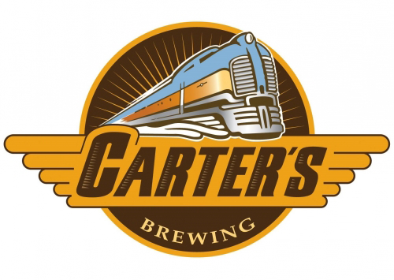

Visit Carter's Brewery's Website
- Carter's opened in 2007. It is named after brewer Mike Uhrich's oldest son who was born right around when the brewery opened.
- Carter's has the most rotational beers out of any brewery in Billings; some are only ever produced once, so if you like one get back in soon before it's gone! 🍻
- Carter's has won a number of awards for their beers throughout the years. Rob Moore Abbey Ale and The Golden Boy both won a gold medal in 2014. 🥇
- About a dozen or so local restaurants have Carter's beer on tap. So if you can't make it down, check the website to see where else you can find these great beers.
- There's a small patio out back where you can enjoy your beer while trains go rumbling by. 🚂
- Carter's Brewery doesn't serve food, but they have popcorn you can munch on. 🍿
- There is a 3 pint (48 oz) per patron per day rule that is strictly followed; it's Montana law!
Buy A Physical MT Brewery Passport Today!
Tap the Map to Go Back